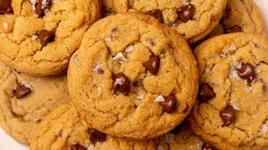
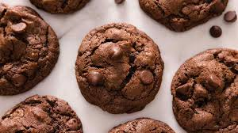

Welcome to the ultimate guide for making mini chocolate chip cookies! These bite-sized treats are perfect
for satisfying your sweet tooth without overindulging. Follow this simple recipe to create delicious,
crispy-on-the-outside, chewy-on-the-inside mini chocolate chip cookies that everyone will love.
Ingredients
- 1 cup all-purpose flour
- 1/2 teaspoon baking soda
- 1/4 cup unsalted butter, softened
- 1/4 cup granulated sugar
- 1/2 teaspoon vanilla extract
- 1/2 cup mini chocolate chips
- 1/4 teaspoon salt
- 1 egg
Instructions
- Preheat your oven to 350°F (175°C) and line a baking sheet with parchment paper.
- In another bowl, whisk melted butter and sugar until smooth.
- Add the egg and vanilla and mix well until creamy.
- Gradually add the dry ingredients to the wet mixture, then fold in the mini chocolate chips.
- Drop small spoonfuls of dough onto the baking sheet.
- Bake for 8-10 minutes, then let cool before enjoying!